Таблица коллекции |  Навигация по канону |  Связные экранизации |
Таблица коллекции | Навигация по канону | Связные экранизации |

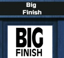

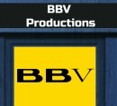


Summoned by Shadows Сентябрь 1991 | 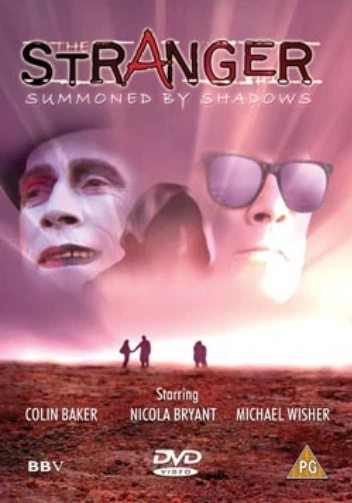 | + Original [ENG] + Русские субтитры 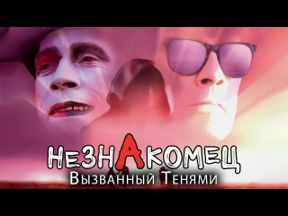 |
|---|---|---|
More than a Messiah Февраль 1992 | 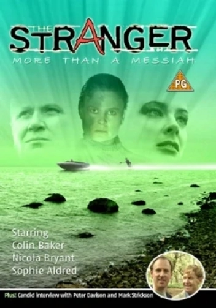 | + Original [ENG] + Русские субтитры 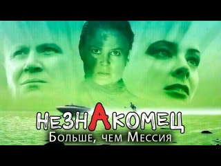 |
In Memory Alone Март 1993 | 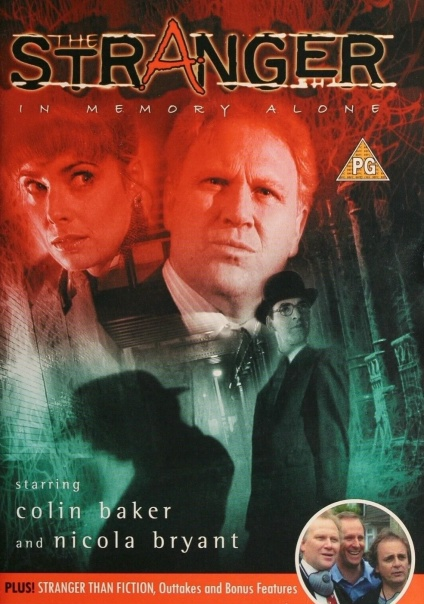 | + Original [ENG] + Русские субтитры 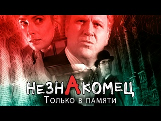 |
The Terror Game Июль 1994 | 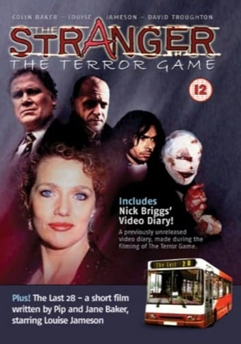 | + Original [ENG] + Русские субтитры 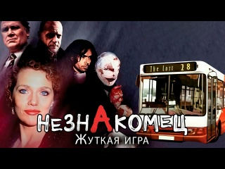 |
Breach of the Peace Август 1994 | 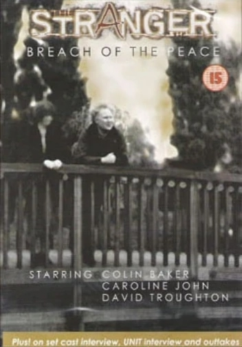 | + Original [ENG] + Русские субтитры 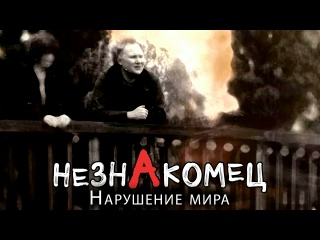 |
Eye of the Beholder 12 мая 1995 | 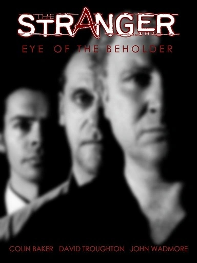 | + Original [ENG] + Русские субтитры 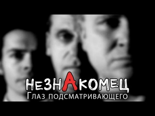 |
Auton 1997 | 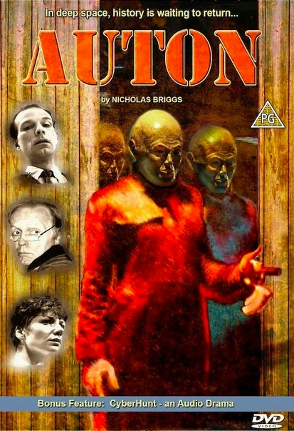 | + Original [ENG] Субтитры: отсутствуют 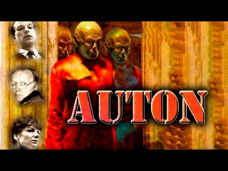 |
|---|---|---|
Auton 2: Sentinel 1998 | 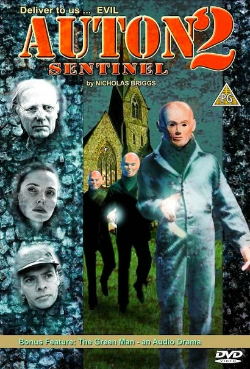 | + Original [ENG] Субтитры: отсутствуют 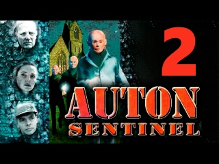 |
Auton 3: Awakening 1999 | 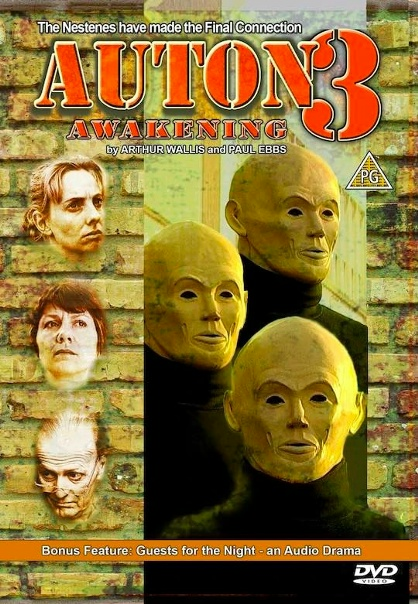 | + Original [ENG] Субтитры: только Английские 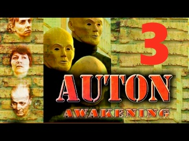 |
Cyberon 2000 | 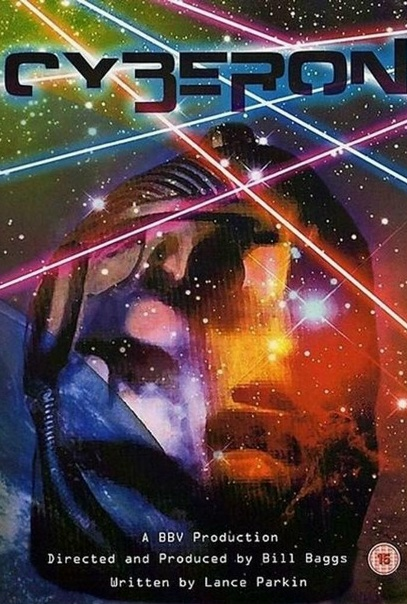 | + Original [ENG] Субтитры: Русские 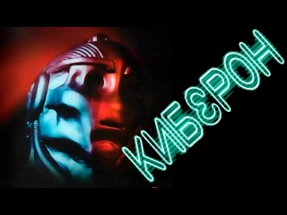 |
|---|---|---|
Zygon: When Being You Just Isn't Enough 27 февраля 200818+ | 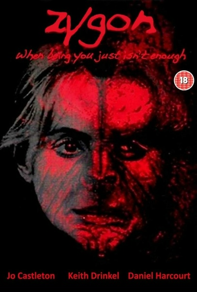 | + Original [ENG] Субтитры: Русские 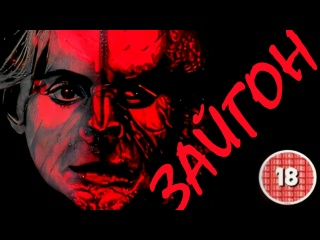 |
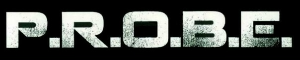
The Zero Imperative Январь 1994 | 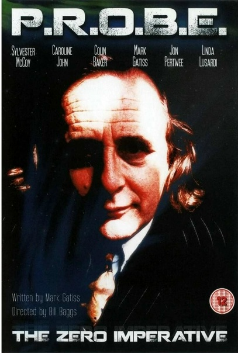 | 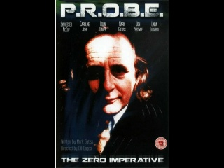 |
|---|---|---|
The Devil of Winterborne 1995 | 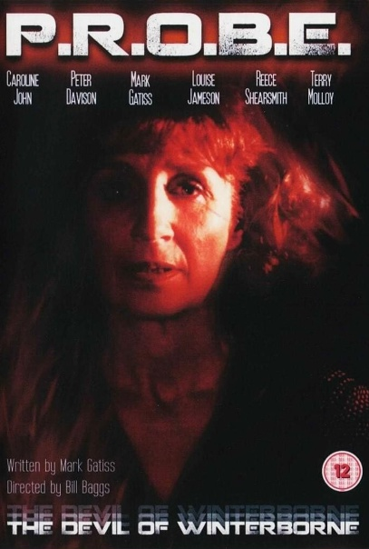 | 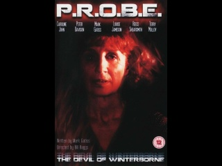 |
Unnatural Selection Январь 1996 | 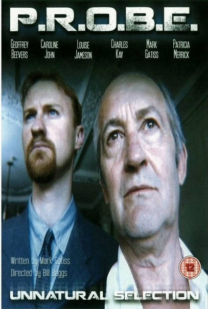 | 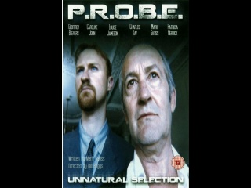 |
Ghosts of Winterborne 1996 | 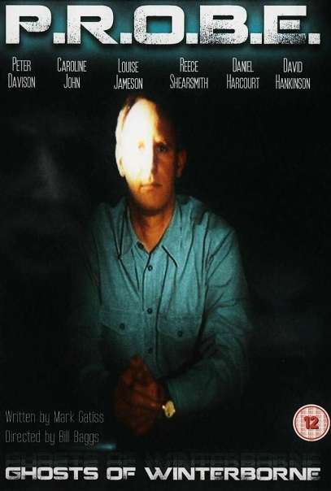 | 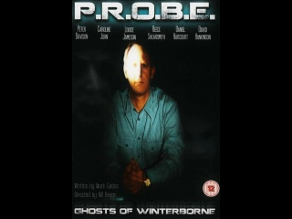 |
When to Die 15 апреля 2015 | 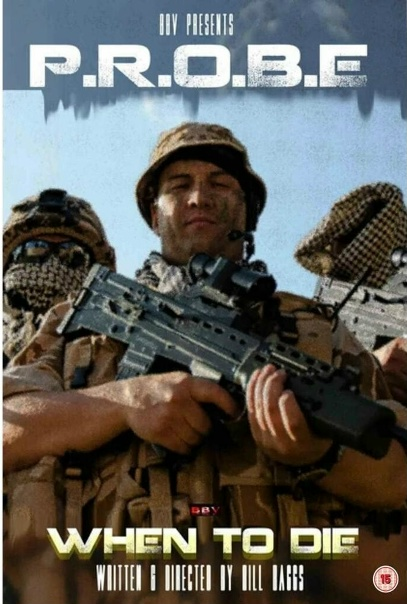 | 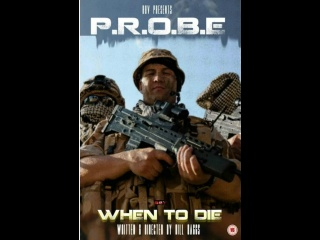 |
P.R.O.B.E. Case Files - Volume 1 10 июня 2021 | 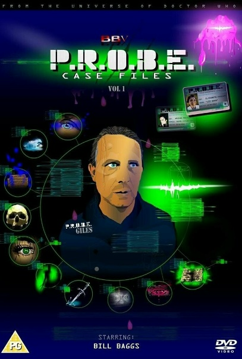 | ПЛЕЙЛИСТ |
P.R.O.B.E. Case Files - Volume 2 25 февраля 2022 | 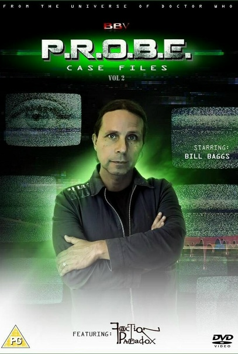 | ПЛЕЙЛИСТ |
The Airzone Solution Ноябрь 1993 | 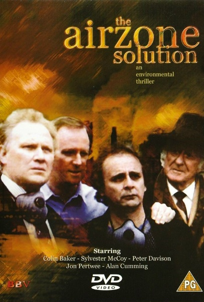 |
|---|
Do You Have a Licence to Save this Planet? 2001 | 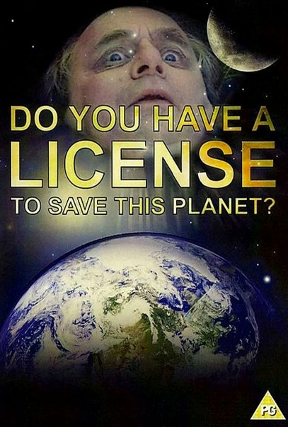 | 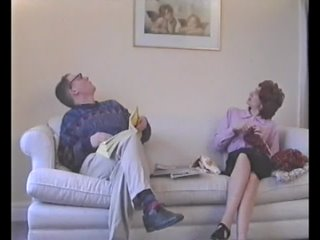 |
|---|
Sunrise: Love Again 2018 | 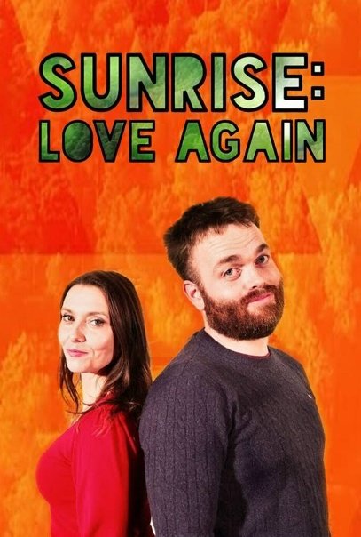 | видео пока на найдено... |
|---|